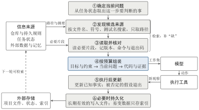

7.4 Context Engineering：为下一步决策准备信息
任务合同写清以后，Agent 还有一个实际困难：模型看不到整个工作区，只能依据本轮送进来的内容判断。项目可能有几千个文件，工具日志不断增长，邮件和日历随时在变。本节回答：每次调用模型之前，该让它看到什么？先按来源和可信度给信息分类，再用四道筛选器和 token 预算决定取舍，然后给出一条“检索—核对—组装—更新—持久化”的处理流水线，最后区分上下文窗口、外部记忆和 KV 缓存。结论是：上下文不是“模型看过的一切”，而是一个有来源、有版本、随任务更新的工作集。
7.4.1 信息从哪里来
上下文（context）指一次模型调用实际送进模型的全部输入：系统提示、工具描述、检索到的材料、历史摘要、最新的工具结果等。它只是“模型看过的一切”中被选进本轮的那一部分。上下文工程（Context Engineering）管理的是信息怎样进入、使用、退出和保存，而不是单纯扩大窗口[13]。在 Coding Agent 里，模型输入混合了几类性质很不相同的材料（表 7-8）；如果统统叫“上下文”，就容易忽略它们的来源和可信度。
表 7-8 Coding Agent 上下文中的六类信息
| 类型 | 典型内容 | 用途 | 更新方式 |
|---|---|---|---|
| 持久规则 | AGENTS.md、CLAUDE.md、项目规范 |
长期适用的约定 | 由维护者版本化管理 |
| 仓库事实 | 源码、类型定义、依赖、测试配置、启动命令 | 判断项目目前怎样实现 | 文件变化后重新读取 |
| 当前任务 | 目标、边界、验收标准、已改文件、当前计划 | 决定工作方向 | 用户修改需求时更新 |
| 运行证据 | 测试失败、终端输出、代码差异、截图 | 决定下一步怎样修正 | 每次工具执行后产生 |
| 即时数据 | 今天的会议、邮件摘要、待办状态、外部 API 响应 | 完成当前业务动作 | 按需获取并记录时间 |
| 历史经验 | 上次任务的摘要、用户偏好、技能 | 减少重复探索 | 筛选后保存，使用时复核 |
由此得到一条基本原则：进入模型窗口，不会改变材料原有的权威性。仓库里的一段注释可能已经过时，网页或邮件正文可能来自不可信的第三方，自动记忆也可能记错。一条规则来自用户，另一条相反的“规则”出现在第三方文档里，系统必须保留来源的区别，不能因为它们出现在同一段输入里就平等对待。这一点也是第 7.9 节防御提示注入的出发点。
上下文的占用从会话一开始就发生。以 Claude Code 的官方说明为例：项目说明文件、自动记忆（若启用）、可用工具的名称和技能的简短描述会在会话开始时进入窗口，之后每读一个文件又继续占用空间；子 Agent 在自己的窗口里完成大量读取，只把结论交回主会话[2]。不同产品的装载顺序不同，但预算始终有限。
7.4.2 窗口是注意力预算：四道筛选器
“上下文越多越好”是常见误解。Anthropic 的工程文章把这种现象称为上下文腐化（context rot）：包括“大海捞针”在内的长上下文测试显示，随着窗口中 token 增多，模型准确找回和利用其中某条信息的能力往往下降；长会话里的旧假设、重复输出和无关片段会与关键约束争夺模型的注意力[13]。即使窗口还没填满，关键约束也可能被淹没。因此上下文窗口更像一份注意力预算，目标是用最少的高信号 token 支撑这一步的判断。
假设 Agent 正在修复“会议开始前十分钟提醒”的时区错误。此刻需要的是时间类型、转换函数、相关测试和失败输出；三十天前的邮件正文、整个界面样式目录，即使真实存在，也不会帮助决定下一步。筛选可以连问四个问题：
相关性：删掉这段信息，下一步会改变吗？不会，就只保留它的路径或索引，需要时再读。
权威性：它是用户要求、项目配置、当前代码、工具返回，还是没核对过的旧聊天？
新鲜度：它对应哪个代码版本、哪次测试运行、哪个数据时刻？会议可能刚被取消。
可验证性：能否回到文件、命令输出或外部记录核对？
四项中有一项明显不满足，就应降低它在当前判断中的分量。实现时可以给每条候选信息附上最小的元数据：来源（文件路径或系统）、读取时间、版本（提交号或数据版本）、适用范围（任务或目录）。测试失败若来自旧的提交，必须在新代码上重跑，不能继续当作当前错误。
例 7-1 上下文预算：全部加载还是最小工作集
设模型的上下文窗口为 \(W=200\,000\) token。今日工作助手的数据有：120 封邮件、30 天日历、200 条待办、10 轮旧对话。各项的平均 token 数为便于计算而假设（见最后一列）。比较“全部加载”与“最小工作集”两种做法的窗口占用和 30 轮循环的累计输入量。
| 步骤 | 算什么 | 算式 | 结果 | 这个数从哪来 |
|---|---|---|---|---|
| 1 | 全部邮件 | \(120\times800\) | \(96\,000\) | 每封含正文约 800 token（假设） |
| 2 | 30 天日历 | \(30\times10\times60\) | \(18\,000\) | 每天约 10 个事件，每个约 60 token |
| 3 | 全部待办 | \(200\times50\) | \(10\,000\) | 每条约 50 token |
| 4 | 旧对话 | \(10\times2\,000\) | \(20\,000\) | 每轮约 2000 token |
| 5 | 规则与工具描述 | — | \(15\,000\) | 系统提示、项目规则、全部工具描述（假设） |
| 6 | 全部加载合计 | 步骤 1～5 相加 | \(159\,000\) | 占窗口 \(159\,000\div200\,000\approx79.5\%\) |
| 7 | 最小工作集 | \(800+2\,000+1\,500\) \(+\,360+450+250\) \(+\,4\,000+600\) | \(9\,960\) | 依次为合同、规则、3 个 Adapter 的工具描述、今日 6 场会议、3 封邮件摘要（各 150）、5 条逾期待办、4 个相关代码片段（各 1000）、最新失败输出 |
| 8 | 最小工作集占比 | \(9\,960\div200\,000\) | \(\approx5\%\) | 步骤 7 |
| 9 | 30 轮累计输入 | \(159\,000\times30\) 与 \(9\,960\times30\) | \(4.77\times10^{6}\) 与 \(\approx3.0\times10^{5}\) | 每轮都要重新发送全部上下文（未计缓存） |
数据流向：邮件、日历、待办、旧对话 → 四道筛选器 → 只留今日、高优先级、未完成、与当前问题相关的部分 → 组装成约 \(10^{4}\) token 的工作集。
结论：全部加载用掉约八成窗口，留给代码和测试输出的空间只剩约 \(4.1\times10^{4}\) token，而且无关邮件与关键规则争夺注意力；最小工作集只占 5%，30 轮的累计输入量相差约 16 倍（\(4.77\times10^{6}\div3.0\times10^{5}\)）。按 token 计费时，成本也大致按这个比例变化。前缀缓存（复用相同开头的 KV 缓存）可以降低重复部分的计算（见第 7.11 节），但不能解决注意力被稀释的问题。
7.4.3 一条上下文处理流水线
每一轮准备上下文可以写成六步（图 7-5）。它不要求专门的向量数据库，小项目用文件搜索和结构化记录也能实现。
确定当前问题：从任务状态里取出这一步要判断的事，例如“时区转换错在哪里”，而不是重复整个项目目标。
发现候选来源：先按文件名、符号、调用关系或测试名搜索；需要外部资料时再调用相应工具。此时只取路径和简短摘要。
读取并核对：打开相关文件的必要片段，确认版本；测试输出连同命令和退出码一起保存；来源相互冲突时，显式记下冲突。
按预算组装：先放任务目标和不可忽略的约束，再放当前问题、相关代码和最新失败证据；长日志只留定位信息和原始记录的位置。
执行后更新：新结果到达后，更新“已知事实、仍不确定的点、下一步动作”；已被否定的假设退出工作集。
必要时持久化：跨会话仍然有效的决定写进项目文件或任务状态；易变数据只存索引、来源和时间。

图 7-5 每轮上下文处理流水线。②③从来源中检索并核对，④按预算组装工作集交给模型（高亮）；工具执行后的新观察在⑤更新工作集，相当于压缩；⑥把长期有效的内容写入外部存储，供以后检索
流水线里有两种动作常被混为一谈。检索是从庞大的信息库里找出有用片段，解决“缺什么”；压缩是在多轮执行后只保留决策需要的状态，解决“太多了”。好的阶段摘要应包括：目标是否改变、已确认的事实、已修改的文件、最近一次检查的结果、尚未解决的问题、下一步的理由，而不是一句“目前进展顺利”。原始日志和代码差异保留在外部，摘要是索引，不是新的事实来源；仓库状态变了，就重新读文件或差异，而不是沿用旧摘要。
工具描述同样占预算。接入的工具越多，每轮都要带上的工具说明就越长。一些系统因此采用按需加载：会话开始时只放工具名称和一句话说明，任务确实需要时再加载完整的参数描述；Skill（按需加载的操作说明包，第 7.6.5 小节）也按同样思路，平时只露出名称和简介。长会话被压缩以后，持久规则要能从磁盘重新注入，不能随压缩一起丢失。新会话则先加载简短的入口说明，再按索引获取实时数据；需要大量读取的子任务交给子 Agent，在隔离的窗口里完成。
7.4.4 记忆要分层，旧结论不是新事实
长任务、跨会话任务都需要记忆。第 7.2.2 小节已经区分了会话状态、项目知识和跨任务经验三层；对上下文工程来说，关键是它们进入窗口前都要复核。项目规则适合写在受版本控制的文件里，未来的 Agent 和人都能看到；自动记忆更适合保存经验性线索，使用前要核对当前仓库。历史记录说“日历接口返回 UTC 时间”，而代码已改成携带时区的时间对象，那么当前的类型定义和测试结果优先。
保存记忆时还要防止把不可信的内容“洗成”长期规则。邮件、网页、仓库里的第三方文件可能写着诱导 Agent 改变目标或泄露信息的文字。它们可以作为数据被读取，但不能因为出现在工具结果里就覆盖用户指令；从这些来源提炼的经验要保留原始出处并经过验证。记忆系统的完整设计见第 8 章。
7.4.5 本章案例的最小上下文包
对今日工作助手的首页任务，不需要一次加载全部邮件和整个仓库。可以交给模型开工的最小上下文包包括：第 7.3.5 小节的任务合同；项目入口和运行命令；三个 Mock Adapter 的接口；与首页及其测试直接相关的文件路径。Agent 读完后再按发现的问题补充资料。进入测试阶段时，当前代码差异和最新检查结果比最初的设计讨论更重要；进入页面验收阶段时，页面状态和截图又比旧的单元测试日志更重要。工作集随阶段变化。
评价上下文设计可以用一个检查问题：下一步判断出错时，能否指出是缺少信息、信息过时、来源不可信，还是摘要丢了关键细节？能定位原因，就能改进检索和组装规则；所有内容都堆在一条越来越长的对话里，这些原因就无从区分。
本节要点
上下文按来源分六类；进入窗口不改变权威性。
窗口是注意力预算：用相关性、权威性、新鲜度、可验证性筛选，用元数据记录来源和版本。
检索补“缺”，压缩去“多”；摘要是索引不是事实；规则压缩后要能重新注入。